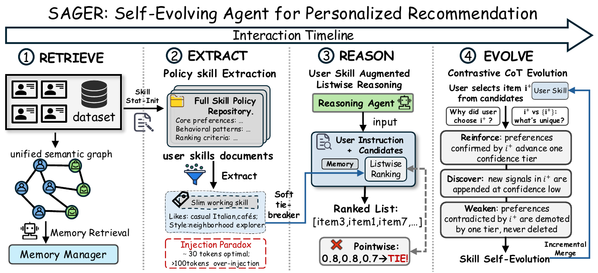

01研究背景与问题定义
推荐记忆往往记录用户点过什么、喜欢哪些属性，但“知道更多历史”不等于“更会替这个人判断”。同样喜欢餐馆的用户，可能按预算、熟悉程度或探索欲作不同取舍。把整份偏好档案不断塞进提示还可能淹没当前指令；独立给候选打分则容易产生大量同分，使个性化规则无处发挥作用。
Sager 为每名用户维护自然语言 policy skill，表达如何权衡选择；协同记忆继续负责提供事实与社区信号。每次只抽取很短的工作技能，在列表排序中作低优先级裁决，再根据真实选择对完整技能做增量更新。创新在于把每用户的判断策略作为长期演化对象，而不只是更新行为摘要。
| 信息 | 职责 | 冲突时的地位 |
|---|---|---|
| 当前指令 | 本次明确需求与约束 | 最高优先 |
| 协同 facets | 用户与邻居的相关事实 | 提供主要匹配证据 |
| slim policy skill | 个体稳定偏好与决策风格 | 相近候选间的软裁决 |
02方法与技术路线
每轮有两条状态线：协同记忆提供所知事实，完整技能仓库承载可演化判断。推理读取两者的紧凑表示，用户反馈只在选择发生之后更新。
Memory Manager
按语义图中的用户/物品邻居，综合历史与社区信号，生成 collaborative facets。
Skill Extractor
从持久完整技能抽取约 30 token 的 likes 与 style；不直接注入整份长文档。
Listwise Reasoning
一次产生严格候选顺序；先满足指令，再对齐事实，最后用个体风格区分相近候选。
Contrastive Evolve
Reinforce 既有偏好 → Discover 低置信新假设 → Weaken 被正例明确反驳的偏好；输出增量差异。
完整档案与工作技能为什么必须分开
冷启动用户从领域模板开始；有历史者用物品元数据的统计构建器初始化技能，减少初始 LLM 调用。随后完整仓库保留偏好、行为模式、排序准则与置信状态，用于承载多轮证据。
推理时由提取器压成约 30 token 的主要喜好与风格。论文在 gpt-4o-mini 上发现注入长度非单调：超过约 100 token 后出现质量下降。这里的数字是该实验的工作点，不能泛化为所有模型的认知定律；双表示的普遍价值是把可维护状态与决策时注意力预算分开。
列表排序怎样让技能进入实际判断
逐候选打分要求 LLM 校准绝对分值，不同物品容易落入相同分数。listwise 直接比较候选并输出全序，从形式上消除并列，让个体规则可用于必须作出的细微选择。
技能是软裁决而非硬覆盖：本次指令优先于 facets，facets 优先于 slim skill。这样的优先级限制了过往偏好对当前明确要求的绑架，但最终排序仍是模型判断；输出严格顺序不代表比较一定正确。
保守增量更新怎样避免一次选择重写用户
对比输入把未选候选按原排序从低到高排列，先看容易区分的差异，最后看接近首选的近似项。Reinforce 将正例确认的旧偏好提升一级，Discover 只把新属性作为低置信假设；只有达到中等置信的偏好才能进入工作技能。
Weaken 只在实际正例明确矛盾时降一级，不直接删除。“未选”也不等于“不喜欢”，因此不能从一次未点击生成避免规则。输出是结构化差异，再合并到既有仓库，防止每轮重写造成个体画像漂移。这里的置信等级是规则化状态，而不是统计校准后的概率。
论文原始结构图 · 点击对照

03实验设计与结果分析
策略技能是否超出单纯记忆的效果
| 方法 | Goodreads H@1 | Goodreads N@5 | Books H@1 | Books N@5 |
|---|---|---|---|---|
| Vanilla LLM | 0.2864 | 0.5041 | 0.3138 | 0.5226 |
| MemRec | 0.3997 | 0.6112 | 0.5117 | 0.6601 |
| Sager | 0.4593 | 0.6512 | 0.5215 | 0.6694 |
Goodreads 的 H@1 相对 MemRec 提高 0.0596，Books 只有 0.0098，说明个体策略的收益依赖领域与起点。H@1 反映首位命中，N@5 衡量前列整体排序，二者同时改善比只调整首位更有说服力；但它们仍是给定候选集合的离线偏好预测，不等于长期用户满意度。
收益是否只是排序格式变化
| 设置 | H@1 |
|---|---|
| 完整 | 0.459 |
| 移除 policy skill | 0.399 |
| 移除 listwise reasoning | 0.427 |
| 移除 incremental CoT | 0.43 |
| 移除 statistical init | 0.441 |
去掉技能、列表排序或增量演化都下降，支持三个设计各有作用。技能移除损失最大，但这并未单独证明自然语言“决策原则”优于同等长度、同等历史信息的压缩画像；输入信息与更新方式也随之改变。长期收益还需计入记忆合成、提取和演化调用，30 token 只是注入长度，不是整次推荐总成本。
04贡献、局限与综合评价
贡献是将决策策略变成持久且可编辑的用户状态
论文区分知道什么与怎样判断，并用完整仓库、短工作技能和保守更新把这种区分落实。相比无条件增长的偏好记忆，它提供了更明确的控制点：哪些信号能进入当前决策，何时可提升信心，以及什么证据足以削弱既有判断。
规则置信度不是偏好真实性的概率
低—中—高等级决定哪些信号能进入短工作技能，确实能抑制一次行为造成的大幅更新。但等级由模型对证据的解释推进，没有直接对应统计置信区间；多个相关选择也可能只是一种短期情境的重复。因此高等级不应被读成已经证实的稳定人格。尤其提取器只保留少量主题时，少数置信高的错误规则会持续主导排序。可以比较规则等级与后续反例频率，并在不同情境下追踪同一属性是否仍有效，检验这种可编辑状态是否经过适当校准。
当前候选选择不能代表用户的全部偏好
系统只看到平台给出的候选及一次正选，容易把曝光偏差和短期情境当成稳定风格。保守更新降低了单次误判，但高置信旧偏好也可能对真正的兴趣突变反应过慢。离线重放的命中收益没有直接测到这种适应滞后。
一个有辨别力的检验是固定候选生成与历史信息量，对比等长度画像和 policy skill，在已知偏好切换点后测恢复速度、误更新与长期多样性。若收益主要来自短输入和严格排序，概念贡献应收敛到注意力与校准；若策略表示还能改善迁移和变化适应，才更支持独立“每用户策略演化”的价值。